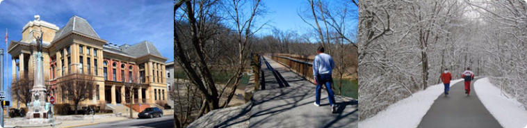

Recreation & Attractions

Something for Everyone is the unofficial motto of the Crawfordsville Park and Recreation programs. Through classes, community events and ample city parks with natural roving spaces, the department strives to keep its population fit socially and physically."
Crawfordsville Community Center
Spanning 26,000 feet this new facility houses a weight room, gymnastics room, gymnasium, walking track and group fitness room. There are also locker rooms and a multi-purpose room with a kitchen. Crawfordsville Park and Rec offers a wide range of sports and fitness classes for everyone from preschoolers to seniors.
City Parks
Milligan Park, one of the largest parks in the area offers a 50-meter swimming pool, baseball and softball fields, along with an 18 hole Municipal Golf Course. There are other city parks throughout the town providing a pedestrian and bike friendly layout. Specific park sites maintain softball fields for men's, women's and coed softball teams, as well as for Little League teams. There are also organized Adult and Youth Touch Football and soccer games.
Crawfordsville Country Club
Newly built in 2006/2007, this is a first-class facility offering an 18-hole golf course, swimming pool and premier dining facility for its members and guests.
State Parks & Reserves
Shades State Park and Pine Hill Nature Preserve